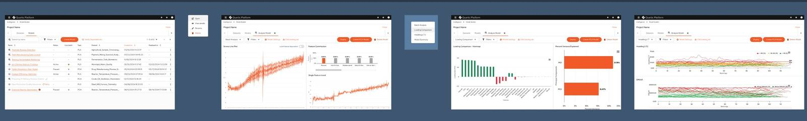

Tables everywhere
Engineers were trying to spot patterns and outliers in data — tables are the worst tool for that.
Rebuilt a multivariate data analysis workbench for manufacturing engineers — from a rigid, table-heavy tool into a flexible, visualisation-first platform for 50K+ users across Fortune 500 plants.
Read the case study ↓
THE PRODUCT
Quartic.ai is a decision-intelligence platform that puts that data to work. Sensors on equipment capture hundreds of features at every step of production — temperature, pressure, pH, wavelength readings. MVDA (Multivariate Data Analysis) is the module that lets engineers make sense of it.
The workflow: build statistical models from historical batch data, then run live batches against those models in real time. If a batch starts deviating from the trained norm, the model surfaces it — so engineers can intervene before a faulty batch reaches the end of the line.
WHAT I WALKED INTO
The existing MVDA was usable in the way a spreadsheet is usable — technically functional, but deeply misaligned with how manufacturing engineers actually think and work. Everything was in tables. The workflow was linear and unforgiving. Navigation required users to hold a mental model of decisions made three steps back.
Engineers were trying to spot patterns and outliers in data — tables are the worst tool for that.
Made one choice early on? Wrong. You’re starting over. The flow didn’t let users move backwards or skip steps.
Large projects with many models and datasets became unmanageable. The project management layer barely existed.
MVDA didn’t follow Quartic’s design language. Every module felt like a different product.
THE USERS
Research surfaced two personas with near-opposite needs. Designing for both without alienating either was the central tension of the whole project — one builds the models, the other lives with their output.
Needs control, precision and depth.
“Give me every knob. I know exactly what I’m tuning and why.”
Needs signal, not noise.
“Just tell me if something’s wrong with the line right now.”
MY SCOPE
Four areas, one accountable designer — from the research artefacts through to the components engineers built against.
Full UX spec — personas, journeys, functional requirements, flow additions, content and error states for every screen.
Adapted an open-source component library to Quartic’s branding and domain. Cut design-to-dev handoff time by 40% across 15+ modules.
End-to-end hi-fidelity designs for the full MVDA redesign — dataset wizard, model analysis dashboards, live monitoring views.
Partnered directly with ML engineers to translate PCA/PLS outputs into interfaces engineers could interpret without a statistics degree.
THE WORK — DATASET CREATION
Before a model can be built, engineers create a dataset — selecting which product, recipes, batches, and feature types to include. The old flow was a confusing single form. The redesign is a 6-step wizard handling three data types (time series, discrete, spectral) with free navigation between completed steps and contextual validation at every stage.
Configure which product and recipe to pull from, then select up to 100 batches. Handles multi-recipe combinations with inline validation for conflicting assets or missing aliases.
Time series (sensor readings over time), discrete (single-point values), and spectral (wavelength data) each have their own step with smart empty states and minimum-selection guards.
Summarises all selections before data import. Warns at the review step if no datasets will be created — before any processing is triggered.
THE WORK — ANALYSIS & MONITORING
Same platform, two fundamentally different mental models. Naming “PCA” and “PLS” as Analysis and Production models was itself a design decision — making purpose clear without requiring a statistics background.
Comparing historical batches
Flagging live deviations
ANALYSIS MODEL · GROUP COMPARISON
A table-heavy report became a two-panel workbench. Left: a multi-feature projection scatter (PC1 vs PC2) where engineers group batches visually — good against bad — to understand what separates them, then select which batches form the training set. Right: feature contribution and single-feature trend panels explain what’s driving any difference.
Interactive scatter. Select batches, assign to groups, watch clustering emerge.
Bars ranked by variance explained. Click one to see its trend below.
Group A vs B mean and ±3σ confidence bands over time.
PRODUCTION MODEL · LIVE MONITORING
Production models ingest live batches in real time. The monitoring view shows every batch’s score trajectory as it runs — letting engineers catch a deviation forming before the batch ends. Loading-comparison heatmaps and Hotelling T² charts give the deeper diagnostic views for when something goes wrong.

All models with status — Active, Paused, Monitoring Paused — at a glance.
Every live batch overlaid. Divergence from norm is immediately visible.
Heatmap of which variables load most on each principal component.
Statistical control chart per batch. Crosses the limit → needs attention.
DESIGN DECISIONS
INSTEAD OF
Rows and columns of numbers for engineers trying to understand batch behaviour across hundreds of variables.
WE USED
Patterns and outliers that were invisible in tables become immediately obvious when 100 batches are plotted as points in a 2D projection. Clicking a point drills into that batch’s feature behaviour.
INSTEAD OF
Start over if you realised you picked the wrong recipe in step 1 after completing step 5.
WE USED
Any completed step is tappable from the sidebar. Go back, change a selection, and the downstream steps update their validation state accordingly — without resetting everything else.
INSTEAD OF
The old flow would fail at the end when required configurations were missing, with no indication of where or why.
WE USED
Alias missing? Shown inline at the feature it affects. Recipes have no common batches? Told in step 1, not at the review screen. Engineers always know exactly what needs fixing and where.
INSTEAD OF
A model says “batch 43 is anomalous.” Why? Unknown.
WE USED
Feature contribution charts show which variables drove the anomaly. Loading comparisons explain the model’s own structure. Engineers don’t need a statistics degree — they need enough context to act.
REFLECTION
I could not design MVDA without understanding what PCA actually does, why latent variables matter, and what a process engineer sees when they look at a Hotelling T² chart. The investment in domain knowledge paid back in every single design decision.
Adapting an open-source library for Quartic’s needs meant making thousands of small decisions about tokens, states, and behaviour. Getting that right — and documented — is what made the 40% handoff reduction possible.
The entire value of MVDA depends on engineers being able to read a scatter plot and understand what it’s telling them about their production line. The chart design wasn’t a visual layer on top of the product — it was the product.
The UX spec I wrote before designing anything became the single source of truth for the team — engineering, product, and stakeholders. Decisions stopped being revisited because they were written down.
OUTCOME
Users across Fortune 500 manufacturing plants
In closed deals this work contributed to
Reduction in design-to-dev handoff time
Promoted April 2025 — one of two designers retained post-acquisition
Back to the portfolio
See selected work →